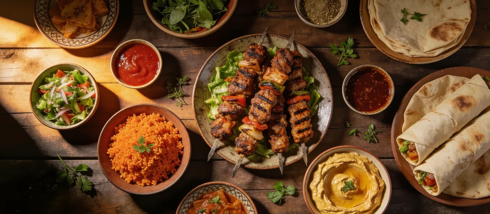
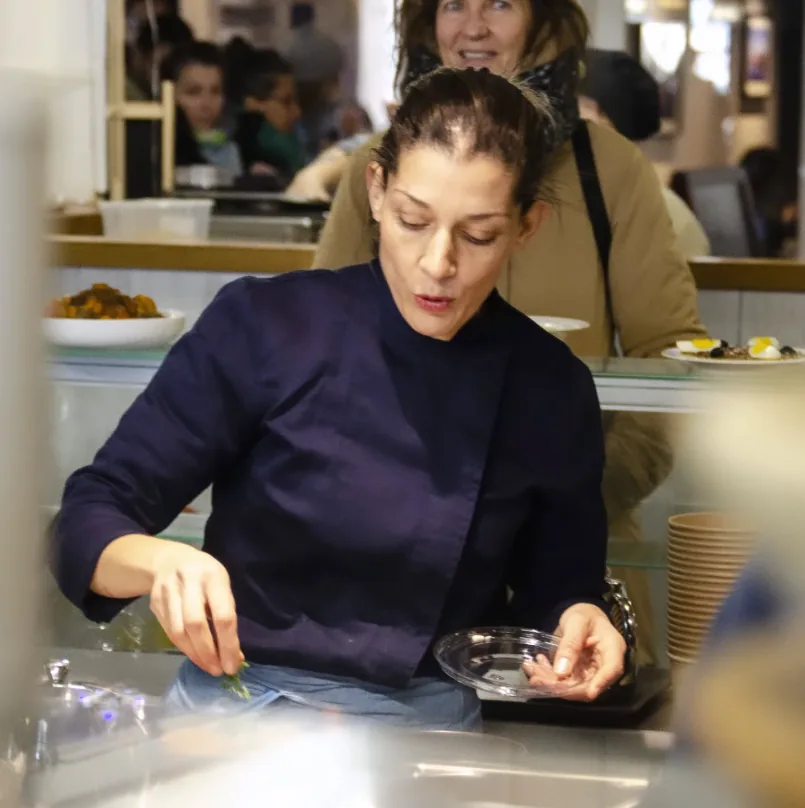

Marseille · Cuisine berbère authentique
Les saveurs chaouies, faites maison.
Chez Dihya, retrouvez une cuisine généreuse inspirée des traditions berbères et méditerranéennes, préparée avec soin au cœur de Marseille.
Produits frais · 100 % fait maison · Devis sur demande


Notre histoire
Une passion pour la cuisine berbère.
Au cœur de Marseille, Dihya fait découvrir la cuisine chaouie à travers des recettes traditionnelles, généreuses et cuisinées sur place.
Des chakhchoukhas aux bricks, en passant par les batbouts et les douceurs orientales, chaque plat célèbre le goût du partage et l’attention portée aux bons produits.
Produits frais et locaux · Cuisine authentique · Devis événementiel sur demande
Ils nous ont rendu visite
Une adresse appréciée à Marseille.
Découvrez les retours de nos clients et partagez votre expérience sur Google.